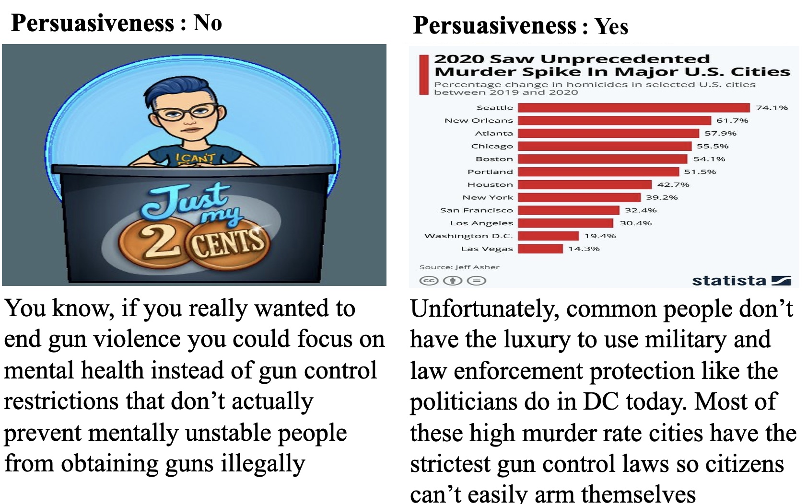

Co-located with The 10th ArgMining Workshop at EMNLP 2023 in Singapore.
View Project Code on GitHub ImageArg/ImageArg-Shared-Task
Important Announcement:
[07/05] Registration will close on 07/07 (Anywhere on Earth).
[07/03] Update data-downloading scripts. Please pull the
new code.
[05/20] To participate, please fill in this registration
form.
There has been a recent surge of interest in developing methods and corpora to improve and evaluate persuasiveness in natural language applications. However, these efforts have mainly focused on the textual modality, neglecting the influence of other modalities. Liu et al. introduced a new multimodal dataset called ImageArg. This dataset includes persuasive tweets along with associated images, aiming to identify the image's stance towards the tweet and determine its persuasiveness score concerning a specific topic. The ImageArg dataset is a significant step towards advancing multimodal persuasive text analysis and opens up avenues for exploring the persuasive impact of images in social media. To further this goal, we designed this shared task, which utilizes the ImageArg dataset to advance multimodal persuasiveness techniques.
Participants are welcome to submit system description papers for the shared task. Accepted papers will be published in the proceeding of The 10th ArgMining Workshop. To participate, please fill in this registration form and feel free to join ImageArg Slack for conversations.
ImageArg Shared Task is divided into two subtasks. Participants can choose Task A or Task B, or both. Please be aware that some tweet content may be upsetting or triggering.
Given a tweet composed of a text and image, predict whether the given tweet Supports or Opposes the given topic, which is a binary classification. Two examples are shown below.
AS classification">The left tweets express strong stance towards support gun control by indicating a house bill about the requirement of background check of all gun sales. The right tweet opposes gun control because it is inclined to self-defense.
Given a tweet composed of text and image, predict whether the image makes the tweet text more Persuasive or Not, which is a binary classification task. Two examples are shown below.
 IP classification">The left tweet has an image not even relevant to gun control topic. It does not improve the persuasiveness of the left tweet that argues to focus on mental health instead of gun restriction. The tweet image on the right makes the tweet text (and its stance) more persuasive because it provides strong evidence to show the statistics of the murder rate in major U.S. cities due to restrict gun control laws, so citizens cannot easily arm themselves.
Please read details about AS and IP in the paper if you are interested.
The dataset to download should only be used for participating in the ImageArg Shared Task. Any other use is explicitly prohibited. Participants are not allowed to redistribute the dataset per Twitter Developer Policy.
All the tweets are instantly crawled from Twitter. Organizers are aware some tweets could not be available when participants start to download (e.g., a tweet could be deleted by its author). Organizers will regularly monitor the dataset to provide data patches that will replace invalid tweets with new annotated ones. Participants are required to fill out the Google Form in order to receive data patches and the shared task updates.
Participants are allowed to extend only the training set with further (synthetic) samples. However, if do that, participants have to describe and the algorithm which extends the training set in the system description paper submission. This algorithm must be automatically executable without any human interaction (hence, without further manual annotation or manual user feedback).
Shared Task Evaluation: F1-score of participating teams will be used for ranking, but participants are free to include other metrics (e.g., AUC) in the system description paper submissions.
Shared Task Submission: There are up to 5 submissions from different approaches (systems) allowed per team and per subtask. Participants are allowed to withdraw your submission at anytime until the final deadline by contacting the organizers.
The ImageArg Shared Task invites the submission of system description papers from teams that have participated. Accepted papers will be published in the proceeding of The 10th ArgMining Workshop.
By default, we only accept short papers (at most 4 pages, including references and optional appendix). All papers will be treated equally in the workshop proceedings. Moreover, authors are expected to adhere to the ethical code set out in the ACL Code of Ethics. Submissions that violate any of the policies will be rejected without review.
Please use the EMNLP 2023 style sheets for formatting your paper.
Paper Submission: address is to be announced.
By participating in this task you agree to these terms and conditions. If, however, one or more of these conditions is a concern for you, email us, and we will consider if an exception can be made.